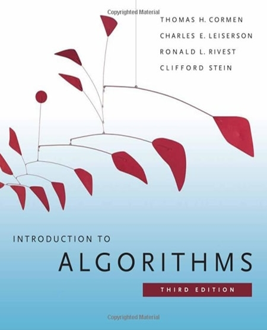

Introduction to Algorithms by Thomas H. Cormen, Charles E. Leiserson, Ronald L. Rivest, Clifford Stein
If you can’t get enough of algorithms, try this one. The unusual feature of the “Introduction…” is that it includes examples in a “pseudocode”. Despite it’s been presented as an introduction, it has a large scope of covered topics, and the whole concept of data structures and algorithms is explained pretty well. It is written in plain English and covers everything you need to know. The only thing is that it’s focused on describing algorithms rather than designing them. Still, it is a good reference book. If you feel you need to learn more about algorithms, then keep this book in mind.
Pros: a detailed catalogue of algorithms to which for a variety of situations.
Cons: a lack of practice, requires a background reading.